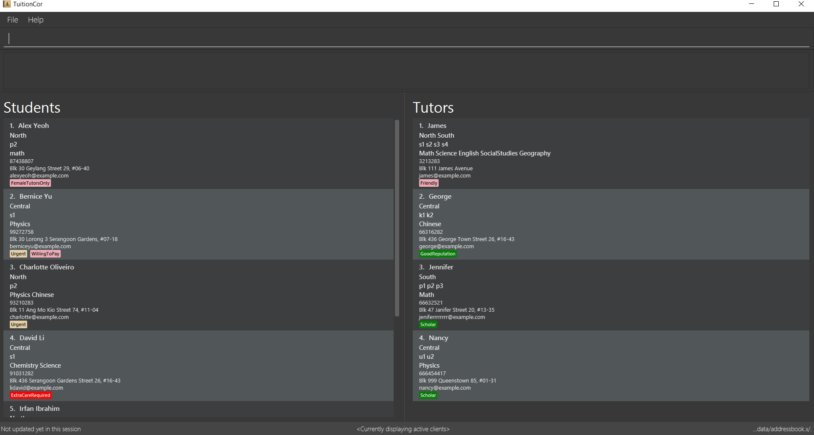

1. Introduction
TuitionCor is for those who prefer to use a desktop app for managing client information. More importantly, TuitionCor is optimized for those who prefer to work with a Command Line Interface (CLI) while still having the benefits of a Graphical User Interface (GUI). If you can type fast, TuitionCor can get your client management tasks done faster than traditional GUI apps. Interested? Jump to the Section 2, “Quick Start” to get started. Enjoy!
2. Quick Start
-
Ensure you have Java version
1.8.0_60or later installed in your Computer.Having any Java 8 version is not enough.
This app will not work with earlier versions of Java 8. -
Download the latest
TuitionCor.jarhere. -
Copy the file to the folder you want to use as the home folder for your client information.
-
Double-click the file to start the app. The GUI should appear in a few seconds.
 -
Type the command in the command box and press Enter to execute it.
e.g. typinghelpand pressing Enter will open the help window. -
Some example commands you can try:
-
list: lists all contacts -
addn/John Doe p/98765432 e/johnd@example.com a/John street, block 123, #01-01: adds a contact namedJohn Doeto the Address Book. -
delete3: deletes the 3rd contact shown in the current list -
exit: exits the app
-
-
Refer to Section 3, “Features” for details of each command.
3. Features
Breakdown of features
-
In v1.2:
-
In v1.3:
-
Coming in v1.4:
-
Coming in v1.5:
-
Coming in v2.0:
Command Format
-
There are alias for some of the commands, which helps users to save some time. e.g. for add command, you can use add n/… or a n/…
-
Words in
UPPER_CASEare the parameters to be supplied by the user e.g. inadd n/NAME,NAMEis a parameter which can be used asadd n/John Doe. -
Items in square brackets are optional e.g
n/NAME [t/TAG]can be used asn/John Doe t/friendor asn/John Doe. -
Items with
… after them can be used multiple times including zero times e.g.[t/TAG]…can be used ast/friend,t/friend t/familyetc. -
Parameters can be in any order e.g. if the command specifies
n/NAME p/PHONE_NUMBER,p/PHONE_NUMBER n/NAMEis also acceptable.
3.1. Viewing help : help
Format: help
3.2. Adding a client: addclient {Since v1.2}
Adds a client to TuitionCor
Format: addclient c/CATEGORY n/NAME p/PHONE_NUMBER e/EMAIL a/ADDRESS [t/TAG]… l/LOCATION g/GRADE s/SUBJECT
Alias Format: ac c/CATEGORY n/NAME p/PHONE_NUMBER e/EMAIL a/ADDRESS [t/TAG]… l/LOCATION g/GRADE s/SUBJECT
| A client can have any number of tags (including 0) |
| User can only enter only a specific location and a specific grade for each client. The type of location and grade accepted can be found below. |
Examples:
-
addclient c/t n/John Doe p/98765432 e/johnd@example.com a/John street, block 123, #01-01t/urgent l/north g/p1 s/math -
`ac c/s n/Betsy Crowe t/friend e/betsycrowe@example.com a/Newgate Prison p/1234567 t/urgent l/south g/primary 1 s/math
3.3. Listing all persons : list
Shows a list of all persons in the address book.
Format: list
Alias Format: l
3.4. Sorting a client: 'sort' {Since v1.3}
Sorting tutor’s list based on name
Format: 'sort tn'
Alias Format: 'so tn'
Sorting tutor’s list based on location
Format: 'sort tl'
Alias Format: 'so tl'
Sorting tutor’s list based on grade
Format: 'sort tg'
Alias Format: 'so tg'
Sorting tutor’s list based on subject
Format: 'sort ts'
Alias Format: 'so ts'
Sorting student’s list based on name
Format: 'sort sn'
Alias Format: 'so sn'
Sorting student’s list based on location
Format: 'sort sl'
Alias Format: 'so sl'
Sorting student’s list based on grade
Format: 'sort sg'
Alias Format: 'so sg'
Sorting student’s list based on subject
Format: 'sort ss'
Alias Format: 'so ss'
Examples:
* 'sort tl'
Tutor’s list displayed will be sorted base on location.
* 'sort ts'
Tutor’s list displayed will be sorted base on subject.
* 'sort tn'
Tutor’s list displayed will be sorted base on name.
* 'sort tg'
Tutor’s list displayed will be sorted base on grade.
-
'sort sl'
Student’s list displayed will be sorted base on location. -
'sort ss'
Student’s list displayed will be sorted base on subject. -
'sort sn'
Student’s list displayed will be sorted base on name. -
'sort sg'
Student’s list displayed will be sorted base on grade.
3.5. Editing a client : edit {Since v1.3}
Edits an existing student in the address book.
Format: edit INDEX c/s [n/NAME] [p/PHONE] [e/EMAIL] [a/ADDRESS] [t/TAG]…
Alias Format: e INDEX c/s [n/NAME] [p/PHONE] [e/EMAIL] [a/ADDRESS] [t/TAG]…
Edits an existing tutor in the address book.
Format: edit INDEX c/t [n/NAME] [p/PHONE] [e/EMAIL] [a/ADDRESS] [t/TAG]…
Alias Format: e INDEX c/t [n/NAME] [p/PHONE] [e/EMAIL] [a/ADDRESS] [t/TAG]…
Examples:
-
edit 1 c/s p/91234567 e/johndoe@example.com
Edits the phone number and email address of the 1st student to be91234567andjohndoe@example.comrespectively. -
e 2 c/s n/Betsy Crower t/
Edits the name of the 2nd student to beBetsy Crowerand clears all existing tags. -
edit 1 c/t p/93213456 e/doe@example.com
Edits the phone number and email address of the 1st tutor to be93213456anddoe@example.comrespectively. -
e 2 c/t n/Beatty Crower t/
Edits the name of the 2nd tutor to beBeatty Crowerand clears all existing tags.
3.6. Locating persons: find {Since v1.3}
Finds clients that contain any of the given keywords.
Format: find KEYWORD [MORE_KEYWORDS]
Alias Format: f KEYWORD [MORE_KEYWORDS]
Examples:
-
find John
ReturnsjohnandJohn Doe -
f Betsy Tim John
Returns any client having namesBetsy,Tim, orJohn -
f 96528541
Returns any client having phone number96528541 -
f blk
Returns any client having keywordblk
3.7. Matching potential clients: match {Since v1.3}
Matches potential tutors to selected student based on INDEX
Format: match INDEX c/s
Alias Format: m INDEX c/s
Matches potential students to selected tutor based on INDEX+
Format: match INDEX c/t
Alias Format: m INDEX c/t
Examples:
-
`match 1 c/t
At index 1 of tutor’s list, John is a tutor finding students that are staying in west and is looking for s4 chemistry. This command will return a list of students that are staying in the west or s4 or Chemistry. -
`match 1 c/s
At index 1 of student’s list, Jim is a student who requires tutors that are staying in west and teaching s4 chemistry. This command will return a list of tutors that are staying in the west or teaching s4 or teaching Chemistry.
3.8. Deleting a client : delete {Since v1.3}
Deletes the specified tutor from the address book.
Format: delete INDEX c/t
Alias Format: d INDEX c/t
Deletes the specified student from the address book.
Format: delete INDEX c/s
Alias Format: d INDEX c/s
Examples:
-
list
delete 2 c/s
Deletes the 2nd student in the student’s list from TuitionCor. -
list
delete 2 c/t
Deletes the 2nd tutor in the tutor’s list from TuitionCor. -
find Betsy
d 1 c/t
Deletes the 1st person in the tutor’s list based the results of thefindcommand.
3.9. Listing entered commands : history
Lists all the commands that you have entered in reverse chronological order.
Format: history
Alias Format: h
|
Pressing the ↑ and ↓ arrows will display the previous and next input respectively in the command box. |
3.10. Undoing previous command : undo
Restores the address book to the state before the previous undoable command was executed.
Format: undo
Alias Format: u
|
Undoable commands: those commands that modify the address book’s content ( |
Examples:
-
delete 1
list
undo(reverses thedelete 1command) -
select 1
list
u
Theundocommand fails as there are no undoable commands executed previously. -
delete 1
clear
undo(reverses theclearcommand)
undo(reverses thedelete 1command)
3.11. Redoing the previously undone command : redo
Reverses the most recent undo command.
Format: redo
Alias Format: r
Examples:
-
delete 1
undo(reverses thedelete 1command)
redo(reapplies thedelete 1command) -
delete 1
r
Theredocommand fails as there are noundocommands executed previously. -
delete 1
clear
undo(reverses theclearcommand)
undo(reverses thedelete 1command)
redo(reapplies thedelete 1command)
redo(reapplies theclearcommand)
3.12. Clearing all entries : clear {Since v1.0}
Clears all entries from the address book.
Format: clear
Alias Format: c
3.14. Saving the data
Address book data are saved in the hard disk automatically after any command that changes the data.
There is no need to save manually.
3.15. Encrypting data files [coming in v2.0]
{explain how the user can enable/disable data encryption}
4. FAQ
Q: How do I transfer my data to another Computer?
A: Install the app in the other computer and overwrite the empty data file it creates with the file that contains the data of your previous Address Book folder.
5. Command Summary
-
Add
add n/NAME p/PHONE_NUMBER e/EMAIL a/ADDRESS [t/TAG]…
e.g.add n/James Ho p/22224444 e/jamesho@example.com a/123, Clementi Rd, 1234665 t/friend t/colleague
Alias:a -
AddClient
addclient c/CATEGORY n/NAME p/PHONE_NUMBER e/EMAIL a/ADDRESS [t/TAG]… l/LOCATION g/GRADE s/SUBJECT
e.g.addclient c/t n/Tutor1 p/98765432 a/Blk 10 Singapore, #01-239 e/testing@example.com t/family l/north g/pri3 s/physics
Alias:ac -
Clear :
clear
Alias:c -
Delete :
delete INDEX
e.g.delete 3
Alias:d -
Edit :
edit INDEX [n/NAME] [p/PHONE_NUMBER] [e/EMAIL] [a/ADDRESS] [t/TAG]…
e.g.edit 2 n/James Lee e/jameslee@example.com
Alias:e -
Find :
find KEYWORD [MORE_KEYWORDS]
e.g.find James Jake
Alias:f -
Match :
match NAME
e.g.match James
Alias:m -
List :
list
Alias:l -
Help :
help -
Select :
select INDEX
e.g.select 2
Alias:s -
History :
history
Alias:h -
Undo :
undo
Alias:u -
Redo :
redo
Alias:r -
Sort :
sort
Alias:so